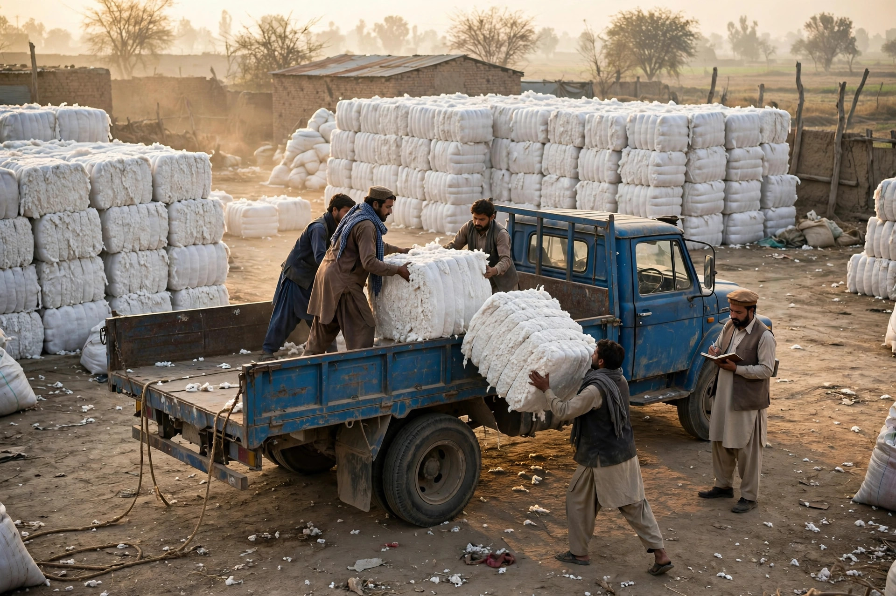

Layyah is a farming district before it is anything else. Cotton moves through its markets, seed and fertiliser dealers serve thousands of acres, and a wide circle of services, from machinery to spraying to transport, keeps the seasons turning. Much of this trade still runs on personal trust, but the first contact is increasingly a search on a phone, made from a field, a village or a moving vehicle.
For traders and dealers, being findable online is not about fashion. It is about being considered at all when a farmer chooses where to sell a crop, buy seed for the next sowing or find a service quickly when timing matters.
A Farming District That Searches From the Field
Farmers search differently from city shoppers. Their questions follow the crop calendar: seed varieties before sowing, fertiliser and spray during growth, buyers and rates around picking and harvest. They often search in simple words, mixing crop names with the town or the word dealer, and they heavily prefer businesses they can call immediately.
Understanding that language is half the work, which is why our article on local keywords Layyah customers use is worth reading alongside this one. The other half is simply being present, accurately, where those searches land: Google Maps and the top local results.

Listings Built for Traders and Dealers
Claim a Google Business Profile in your trading name and place the pin where business actually happens: the commission shop, the godown, the market office. List what you deal in as services, in plain terms: cotton purchase, seed supply, fertiliser, pesticide, or the specific services you provide. Keep the phone number staffed during market hours, because in this trade a missed call is often a missed deal.
Seasonal hours matter. If your working pattern changes between the cotton season and quieter months, update the listing rather than letting farmers travel on wrong information. This kind of disciplined profile care is exactly what local SEO and Google Business Profile optimization covers, and it forms part of the SEO services in Layyah offered by Zaheer Seo Expert.
Content That Follows the Crop Calendar
A simple website or even a well kept listing can follow the seasons:
- Before sowing: the seed types and varieties you stock
- During growth: fertiliser, spray and advisory services you offer
- Before harvest: your buying arrangements, location and contact for sellers
- All year: transport, storage or machinery services, if you provide them
Write these updates factually, without inventing rates or promising prices you cannot guarantee. Farmers respect straight information, and Google rewards pages that genuinely match what people are searching for in that month.
Reaching Farmers Beyond the Town
Most of your customers do not live in Layyah town; they travel in from villages across the district. Your online presence should speak to them directly: clear directions, the road your premises sit on, and honest travel landmarks. Our guide to customers from villages near Layyah explains how that travelling customer decides which business to visit.
Reviews from farmers carry special weight in this trade, because the community is interconnected. A dealer known for fair dealing will see that reputation repeated online if satisfied customers are politely invited to share it.
Trust Travels, Online and Off
In agriculture, a name built over twenty seasons can be protected or damaged by a single season of careless online information. Keep your listing accurate, your content seasonal and truthful, and your phone answered. Traders and dealers who do that find the internet becomes what the market has always been: a place where the reliable names get the business.
Buyers and Sellers From Outside Layyah
The cotton and grain trade does not stop at the district boundary. Buyers, mill representatives and larger dealers from other cities search for Layyah traders before they travel, and what they find online decides whom they call first. A trader with a clear listing, a working phone number and a simple page describing what he deals in looks established to an outsider who has no local contacts to ask.
This is where consistency matters most. The name, number and location on your listing, your website and any directory entry should match exactly, so a buyer comparing sources sees one firm, not three confusing versions of it. Photographs of your premises, weighing arrangements and storage help an outsider judge that you are a real operation of substance. In a trade built on credit and confidence, that first impression, made silently on a phone screen in another city, can be the beginning of a dealing relationship that lasts for many seasons.
Frequently Asked Questions
Do farmers really search online for seed and fertiliser dealers?
Many do, especially younger farmers and those buying for a family farm. They search for a dealer, a product type or a service like spraying or machinery, often from the field. A findable listing with a working phone number meets them at that moment.
What should a cotton trader put on a Google listing?
Your business name, exact location at the market or road where you operate, phone number, working hours during the season and a clear list of what you deal in. Add photos of your premises and storage so new sellers and buyers recognise the place.
When is the best time to update agri content?
Before each season turns: sowing, spraying and harvest periods each bring different searches. Updating your listing and website a few weeks ahead of those periods puts you in front of farmers planning their purchases.
Should an agri dealer have a website as well as a listing?
A listing covers local discovery, while a simple website lets you describe your dealing areas, products and services properly and supports buyers from outside Layyah. The two work best together, with identical name, phone and address on both.
Want More Customers From Google?
Call 0327 7350830 or email seozaheer14@gmail.com. Zaheer Seo Expert, Layyah - Rajan Shah Road, Rana Nagar, Chak 116 TDA, Pakistan. Open 24 hours.
Get Your SEO Strategy →